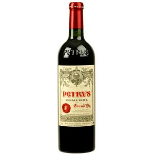
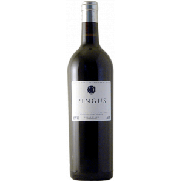

Bienvenido a una orgia de sabores indescriptibles donde pondras a prueba tus papilas gustativas, donde cada bodaco sera orgasmico y te quedaras satisfecho de principio a fin.
Nos especialiamos en conseguir mezclas culinarias de dos grandes paises culinarios que son ITALIA ( reconocidisimo por su aceite di olivia, sus pastas al dente y su buen vino) y FRANCIA(reconocidisimo a la par que a italia por su buen vino,Le gratin dauphinois y la exquisita grasa de pato)
CARTA

Considerado el mejor vino del 2004
Uno de los mejores vinos del mundo llegando a costar 30000$ una botella
Vino traido desde la toscana mas profunda, un excelente vino